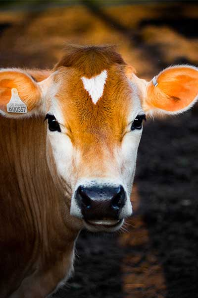

Animal-first care
Our cows are family, not numbers. They graze year-round, shelter in deep-bedded barns, and are handled with quiet, patient hands.
Three generations, 240 acres of clover, and one simple belief — happy cows make the best dairy.


Eleanor and Tom Hart bought this hillside in 1987 with fourteen cows and a hand-built milking parlour. They refused the feedlot model sweeping the industry, choosing instead to rotate their herd across fresh clover and sell only what their own family would drink.
Their daughter Martha grew up counting creamlines, and today she runs the creamery where her children — and yours — now pour from glass bottles stamped with the Meadowgold clover.
What hasn't changed: the cows still graze open pasture, the milk is still chilled within minutes, and we still taste every single batch ourselves before it leaves the farm.
Our cows are family, not numbers. They graze year-round, shelter in deep-bedded barns, and are handled with quiet, patient hands.
Milk is pasteurised gently, cultured slowly and churned by hand. We add nothing, and we take nothing out.

Rotational grazing keeps the soil rich, the grass sweet and the milk golden. When the meadow is healthy, so is the bottle.
Eleanor and Tom Hart plant the first meadows and milk their fourteen cows by hand.
A converted hay barn becomes a small-batch creamery, churning the first Meadowgold butter.
We formalise 100% grass-fed grazing and welcome the first farm-visit school groups.
Our aged cheese and cultured butter win gold at the national dairy awards.
Martha's children now lead the milk round, delivering to homes and cafés across three counties.
Acres of pasture
 Gold awards
Gold awards
 Farm to doorstep
Farm to doorstep
We open the barn doors every Saturday for tours, tastings and a very good cream tea. Bring the family.